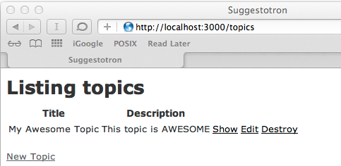

Goals
At the core, most database driven web sites are the same. They need to store records and provide a way to do the following:
- Create new records in the database
- Read or show the records in the database
- Update existing records
- Destroy or delete records
Because these 4 actions (CRUD) are so common, Rails includes the scaffold command to make creating them easier.
Steps
Start the server
Type this in the terminal:
Terminalrails serverNavigate to the app
Point your browser to /topics
You should see the "Listing Topics" page with headers for title and description, and a link to add a new topic:

Create your first topic
- Click on "New Topic"
- Fill in the form and click "Create Topic"
- You should see a page showing your new topic with a message that your topic was successfully created:

Review the list of topics
- Click on "Back"
- You should see the topic list again, this time with your new topic listed:

- Try the "show", "edit", and "destroy" links to see what they do
- You've created a basic database-driven web site. Congratulations!
Explanation
How did all those pages get created and hooked together?
rails scaffolddid it for you.Let's take a closer look at some of the files Rails created:
app/models/topic.rb
- This file contains code for our topic model. If you look at it, it's nearly blank. Creating, reading, updating, and deleting records are built into Rails.
app/views/topics
- This folder contains all the views for our topics model. This is where the code for the forms you used above is stored. Rails created all of these pages as part of the scaffold.
- If you've written HTML before, many lines in the views should look familiar. Rails views are HTML with some extra code added to display data from the database.
app/views/topics/index.html.erb
- This is the code for the page that lists all the topics.
- Index is the name given to the "default" page for a web site or a section of a web site. When you navigate to /topics the topics index page is what is sent to your computer.
app/views/topics/show.html.erb
- This is the page you get when you click the "show" link on the "Listing topics" page.
app/views/topics/new.html.erb
- This is the page you get when you click on "New Topic".
app/views/topics/edit.html.erb
- This is the page you get when you click on "Edit"
app/views/topics/_form.html.erb
- You may have noticed that the page for new topics and the page to edit topics looked similar. That's because they both use the code from this file to show a form. This file is called a partial since it only contains code for part of a page. Partials always have filenames starting with an underscore character.
Challenge question: Can you find the line of code in
new.html.erbandedit.html.erbthat makes the form partial appear?
app/controllers/topics_controller.rb
- This is the controller file that Rails created as part of the scaffold
- If you look you'll see a method (a line beginning with
def) for each of the views listed above (except_form.html.erb)